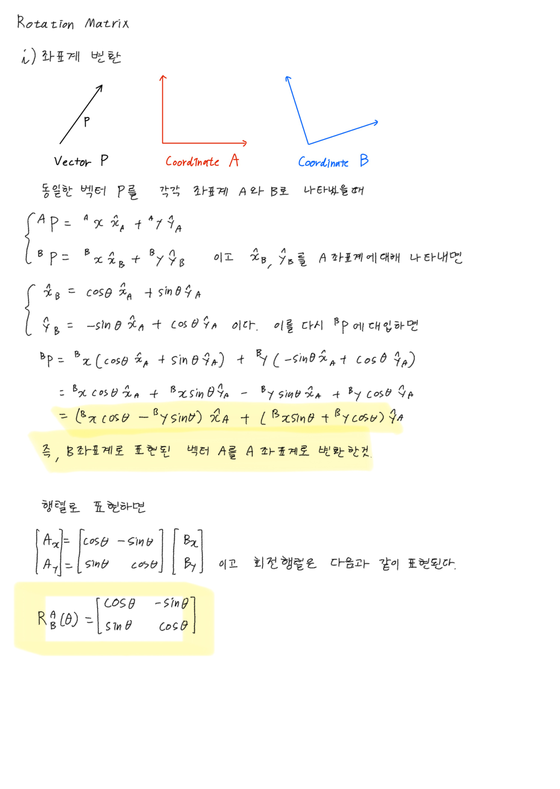
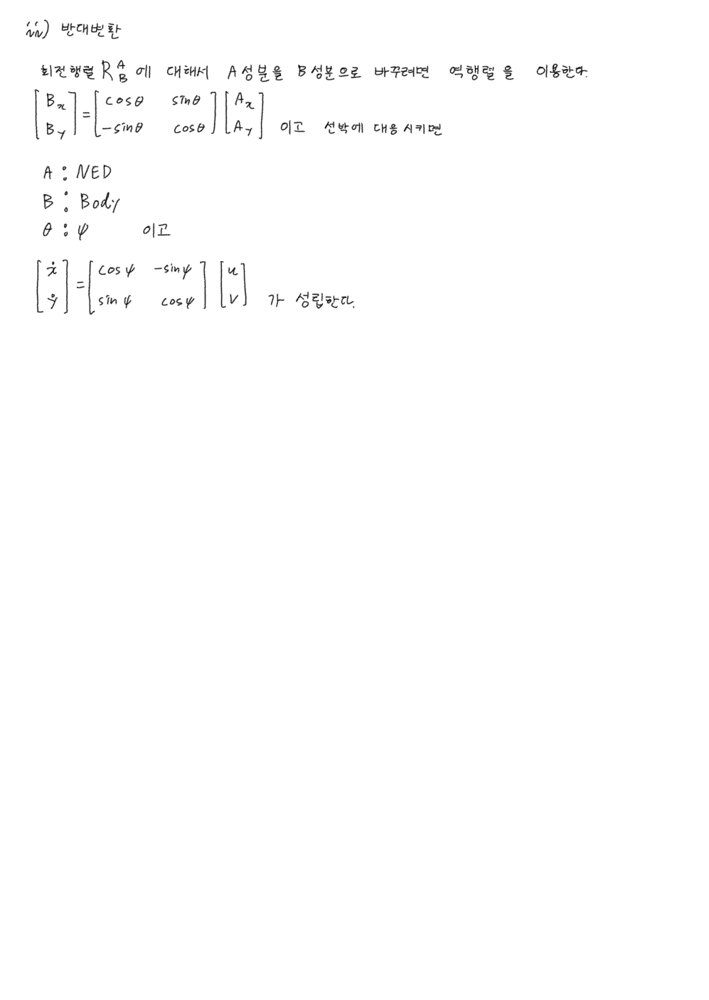

Rotation Matrix
한 줄로
한 좌표계에서 쓴 벡터를 다른 좌표계 성분으로 바꿔주는 표. 새로운 수학이 아니라, 삼각형으로 성분 쪼개던 계산을 표로 정리한 것.
어디에 앉는가 — 6-DOF Marine Craft Model 의 야코비안 J(η) 위쪽 블록. 선속도 변환 담당.
왜 필요한가
배는 자기 기준(BODY)으로만 속도를 안다 — “앞으로 2 m/s”. 그런데 우리는 지구 기준(NED)으로 알고 싶다 — “북쪽으로 1.4, 동쪽으로 1.4”. 그 번역기가 R.
IMU·GPS를 다루면 이 변환이 코드의 절반을 차지한다.
새로운 수학이 아니다 — 이미 하던 계산의 표기법이다
선수가 ψ만큼 틀어진 배가 앞으로 u, 우현으로 v 로 움직일 때, 이미 손으로 쓰고 있던 식이 있다.
ẋ = u·cos ψ − v·sin ψ (북쪽 속도)
ẏ = u·sin ψ + v·cos ψ (동쪽 속도)
u·cosψ, u·sinψ— 선수 방향(대각선)을 북·동 성분으로 쪼갠 것−v·sinψ, v·cosψ— 우현은 선수에서 90° 더 돈 방향이라 sin·cos 자리가 바뀌고 부호가 하나 붙음
계수만 뽑아 표로 만들면 그대로 R_z(ψ) 가 된다.
⎡ ẋ ⎤ ⎡ cos ψ -sin ψ ⎤ ⎡ u ⎤
⎢ ⎥ = ⎢ ⎥ ⎢ ⎥
⎣ ẏ ⎦ ⎣ sin ψ cos ψ ⎦ ⎣ v ⎦
행렬의 각 줄을 입력과 곱해서 더하면 그 줄의 출력. 행렬 곱셈의 정의는 이게 전부다.
막히면 2D로 내려가서 삼각형을 그린다. 행렬은 이미 하던 계산의 포장지일 뿐이다.
외우지 말고 세운다 — R의 각 열은 축 단위벡터다
R의 각 열 = 그 좌표계의 축 단위벡터를 상대 좌표계 기준으로 표현한 것
R^n_b 의 1열 = “배의 선수 방향을 NED로 적은 것”. 2열 = 우현, 3열 = 배의 아래.
부호를 외우려 들 이유가 없다. 축이 어디를 향하는지만 그리면 열이 나온다.
3D 기본 회전 = 2D 표 + “회전축 자신은 통과”
어떤 축을 중심으로 회전하면 그 축 자신은 안 변한다 (지구본을 돌려도 북극점은 제자리). 그래서 3D 기본 회전 하나 = 2D 표 + “나머지 한 축은 통과”.
⎡ cos ψ -sin ψ 0 ⎤ ⎡ 1 0 0 ⎤
R_z(ψ) =⎢ sin ψ cos ψ 0 ⎥ R_x(φ) =⎢ 0 cos φ -sin φ ⎥
⎣ 0 0 1 ⎦ ⎣ 0 sin φ cos φ ⎦
⎡ cos θ 0 sin θ ⎤
R_y(θ) =⎢ 0 1 0 ⎥ ← 부호 위치가 뒤집혀 보임
⎣ -sin θ 0 cos θ ⎦
합성은 순서가 전부다
R^n_b(Θ) = R_z(ψ) · R_y(θ) · R_x(φ) ← ZYX / roll-pitch-yaw
오른쪽부터 작용
행렬 곱은 교환법칙이 성립하지 않고, 이건 물리적 사실이다. 스마트폰을 들고 “눕히고 돌리기”와 “돌리고 눕히기”를 해보면 최종 자세가 다르다.
R_z R_y ≠ R_y R_z는 계산 규칙이 아니라 손으로 확인되는 물리다.
orthonormal이라서 공짜로 얻는 것 두 가지
R 은 orthonormal (열들이 서로 직교, 길이 1). 여기서 두 가지가 따라온다.
R⁻¹ = Rᵀ— 역행렬 계산이 필요 없다. 그냥 전치(가로세로 뒤집기).R^b_n = (R^n_b)ᵀ. 실시간 항법에서 초당 수백 번 변환해도 부담 없는 이유.- 길이 보존 (
det R = +1) — 좌표계를 어떻게 바꿔도 속력은 절대 안 변한다.
이런 행렬들의 집합을 SO(3) 라고 부른다.
변환 후 크기가 달라졌으면 100% 실수. 시뮬레이터 디버깅의 첫 체크포인트.
수식
⎡ cψcθ -sψcφ + cψsθsφ sψsφ + cψcφsθ ⎤
R^n_b(Θ) = ⎢ sψcθ cψcφ + sφsθsψ -cψsφ + sθsψcφ ⎥ (c=cos, s=sin)
⎣ -sθ cθsφ cθcφ ⎦
읽는 법 — 외우지 않는다. 두 줄만 확인하면 나머지는 따라온다.
- 1열 = 선수 방향(
u)의 기여 → φ가 하나도 없다. roll은 선수 방향을 안 바꾸니까 - 3행 = 수직 성분(
ż) → ψ가 하나도 없다. 연직축 중심으로 아무리 돌아도 “연직”은 안 바뀌니까
표기 규약
R_z(ψ) "z축 중심으로 ψ만큼" ← 부품
R^n_b "b의 값을 n의 값으로" ← 완성품
아래첨자와 벡터 위첨자가 붙어서 소거된다고 보면 순서를 안 틀림
R_z(0) = I (단위행렬 = 아무 변화 없음)
검산
| 조건 | 결과 | 맞는 이유 |
|---|---|---|
R_z(0) | I | 아무것도 안 돌렸으니 아무것도 안 변해야 한다 |
R Rᵀ | I | 열이 직교하는 단위벡터이므로 |
‖R v‖ vs ‖v‖ | 같음 | 좌표계를 바꿔도 속력은 물리량이라 안 변한다 |
θ > 0 (코를 위로) 일 때 ż | ż = −u·sinθ < 0 | NED에서 z는 아래가 + 이므로 z 감소 = 고도 상승. 앞뒤가 맞는다 |
헷갈렸던 점
”R_y만 마이너스 부호 위치가 뒤집혀 있다 — 오타 아닌가?”
오타가 아니다. 축의 순환 순서가 x→y→z→x 인데, z축 회전의 짝은 (x,y), x축 회전의 짝은 (y,z) 로 순서대로인 반면, y축 회전의 짝만 (z,x) 로 z가 먼저다. 행렬은 항상 x,y,z 순으로 적으니 y축 회전만 뒤집혀 보인다.
→ 부호를 외우려 하지 말고 그림 그려서 삼각형으로 확인하는 게 안전.
”자세값이 이상하면 부호를 하나 틀린 것이다”
아니다. 규약이 다른 경우가 압도적으로 많다. ZYX 말고도 ZYZ, XYZ 등이 실제로 쓰이고, IMU 드라이버마다 · ROS tf / MATLAB / MSS Toolbox가 각각 다른 기본 규약을 쓸 수 있다.
자세값이 이상하면 버그를 찾기 전에 회전 순서 규약부터 확인한다.
내가 실제로 써본 곳
- 2026-09-04 — 2D 회전행렬을 단위벡터 분해부터 손으로 재유도.
x̂_B = cosθ x̂_A + sinθ ŷ_A,ŷ_B = −sinθ x̂_A + cosθ ŷ_A를ᴮP에 대입해 계수를 뽑는 경로. 반대변환(Rᵀ)까지 확인.

- 6-DOF Marine Craft Model —
J(η)의 위쪽 블록 - 아직 코드로 직접 쓴 적 없음. ROS
tf, MATLABeul2rotm이 내부에서 하는 일이 이것
참고
- 강의 : 제어공학특론 — Dynamic Model of Marine Craft (윤원근 교수, CNU AVSE)
- 교재 : Fossen, Handbook of Marine Craft Hydrodynamics and Motion Control, Ch.2 Kinematics
- QUT Robot Academy — Rotation matrix